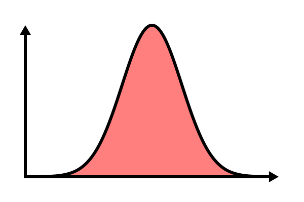
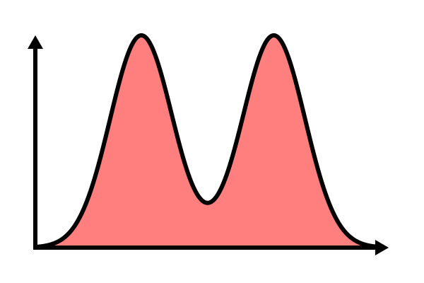
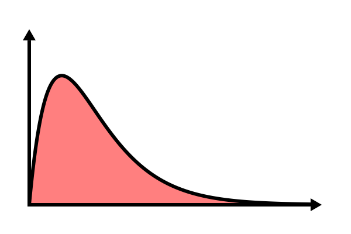
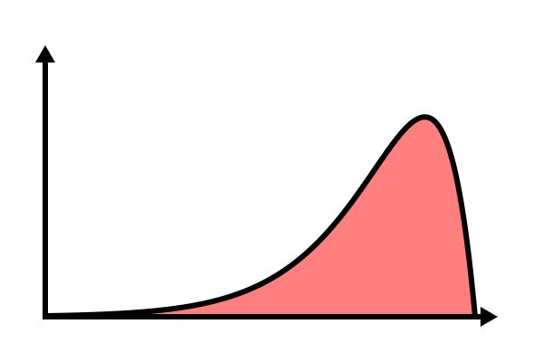
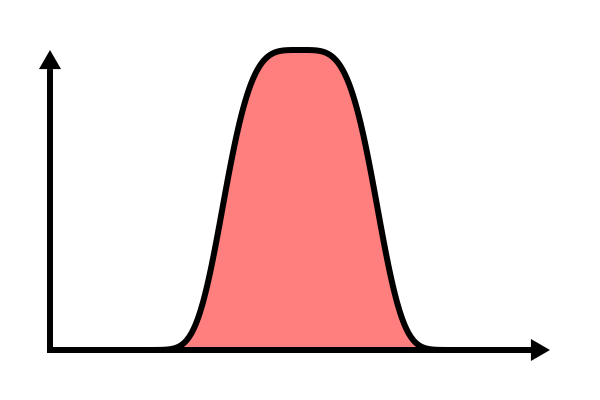

Numeric Variables
1. Histograms
Referring back to the lottery-ticket problem, we may find it convienent to divide our data into sets of observations of relatively similar ticket numbers. We can use bins 50-number bins and then plot out how many observations fall into each bin to create a histogram: The purpose of the histogram is to try to get a feel for the shape of the sample's distribution, which should be roughly similar to the population's distribution.
The purpose of the histogram is to try to get a feel for the shape of the sample's distribution, which should be roughly similar to the population's distribution.
In this case, just by looking at the histogram, we can tell that the maximum must be more than 200 and is probably less than 300 (it's possible our sample just happened to miss some group of people above 250). However, we shouldn't read too much into these distributions - because our sample size is relatively small, we should expect that the distributions don't perfectly match. For instance, the histogram above is "supposed" to be pretty much flat, because it represents a uniform distribution - it is not.
2. Boxplots
Every distribution can be summarized by five statistics:- minimum - the smallest value
- 25th percentile - the value with three times as much data larger than it than smaller than it
- median - the middle value
- 75th percentile - the value with three times as much data smaller than it than larger than it
- maximum - the largest value
| Min | 1 |
| 25th | 4 |
| Median | 16 |
| 75th | 64 |
| Max | 256 |
 In a boxplot, the middle half of the data is inside the box and each "whisker" represents 25% of the data.
In a boxplot, the middle half of the data is inside the box and each "whisker" represents 25% of the data.
3. Summary Statistics
The five statistics mentioned above are called summary statistics, because they summarize the data. Another related summary statistic is the interquartile range (IQR), which is the difference between the 75th and the 25th percentiles.Probably the most common summary statistic is the mean, which is calculated by adding up all the values and dividing by the number of values: $$\bar{x}=\frac{\sum{x}}{n}$$ For our example above, this becomes; $$\frac{1+2+4+8+16+32+64+128+256}{9}=56.778$$ Another common summary statistic is variance, which is defined as $$\sigma^2=\frac{\sum{\left(x_i-\bar{x}\right)^2}}{n}$$ Like IQR, variance is a measure of how spread-out data is. Using our example above, we can calculate this: $$\sigma^2=\frac{(1-56.778)^2+(2-56.778)^2+(4-56.778)^2+(8-56.778)^2+(16-56.778)^2+(32-56.778)^2+(64-56.778)^2+(128-56.778)^2+(256-56.778)^2}{9}$$ $$\sigma^2=6485$$ A similar summary statistic is standard deviation, which is defined as the square-root of variance: $$\sigma=\sqrt{\sigma^2}$$ Sigma behaves more intuitively than variance, because if the data is twice as spread out, then the standard deviation is 2 times larger. Variance, on the other hand, would be 4 times as large.
4. Shape, Center, Spread
Often, distributions are described by three characteristics:- Center
- Spread
- Shape
IQR, standard deviation, and variacne are measures of spread, because they measure how spread-out the data is.
Shape is difficult to summarize. While there are some general rules of thumb for describing shape, there is no single approach to shape that works in every situation - shape is ultimately a qualitative description of data. That being said, shape is generally divided into three separate descriptions:
Modality is the number of "humps" in the distribution
|  |  |
Data is skewed if one of the tails is bigger than the other. A formal measure of skewness is $$E\left[\left(\frac{X-\mu}{\sigma}\right)^3\right]$$
|  |  | |
Kurtosis is a measure of how "heavy" the tails of a distriburtion are. A formal measure of kurtosis is $$E\left[\left(\frac{X-\mu}{\sigma}\right)^4\right]$$ Note that in the examples below, the tails of the left distribution move outward quite a ways before becomming very small, whereas the tails of the right distribution look like there's some kind of "wall" preventing them from moving onward beyond a certain point.
 |  |
5. Outliers
As mentioned above, the most common statistic used for center is the mean. Unfortunately, the mean has a problem: single extreme values can distort it a lot. For instance, the dataset $\{-5,-4,-3,-2,-1,0,1,2,3,4,100\}$ has a mean of 8.64 despite the fact that only one of the 12 values is above 8.64. One solution is to use a trimmed mean, which basically means something like "remove the highest and lowest 10% of the data and then take the mean", though 10% is arbitrary and other numbers are used. In the extreme case of removing the highest and lowest 50% of the data, the trimmed mean becomes equiavalent to the median. The trimmed mean of this dataset is 0, which seems like a center that more closely matches our intuitions.In the dataset above, it is clear that there is something odd about "100". It is much higher than all the other data. Because of this we can call "100" an outlier. There are a variety of ways to decide whether a certain observation is an outlier, but the most common is to say that any observation lower than (25th percentile) - 1.5*IQR or higher than (75th percentile) + 1.5*IQR is an outlier.
The idea behind this is that whether a point is an outlier depends on
- How far away it is from the center
- How spread out the data is
6. Quantile Plots
One question we're often interested in is whether a set of data follows a certain distribution. To help determine this, we can use a QQ-plot (quantile-quantile plot). Let's say we're trying to determine whether $\{-5,-4,-3,-2,-1,1,2,3,4,5\}$ follows a normal distribution. There are 10 datapoints, so we'd expect the smallest datapoint to occur at the 5th percentile, the next to occur at the 15th percentile, etc.... TODO ...
Normal | |
 | |
Heavy Tails | Light Tails |
 |  |
Left Skewed | Right Skewed |
 |  |
Bimodal | Trimodal |
 |  |
- histogram
- ...